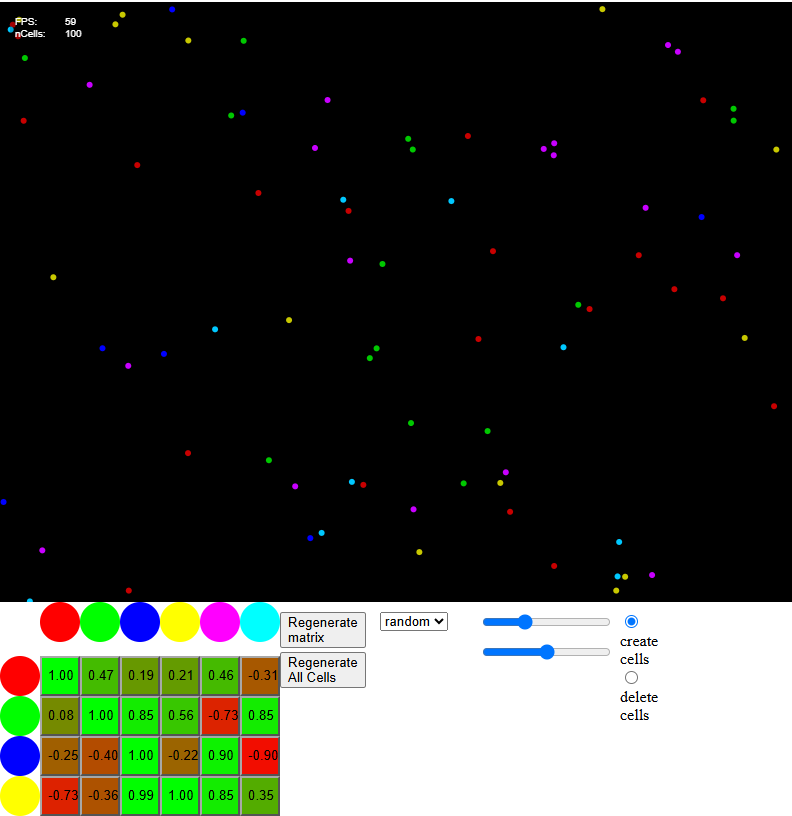
01 / Artificial LifeParticle Life
Attraction, repulsion, and colorful particles. Simple rules create complex behavior.
Explore (opens in a new tab)From the workshop
Choose an experiment to explore. Demos open in a new tab, so your place in the collection will be right here when you return.

01 / Artificial LifeAttraction, repulsion, and colorful particles. Simple rules create complex behavior.
Explore (opens in a new tab)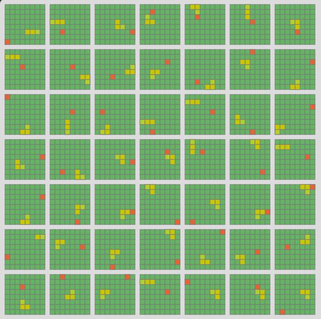
02 / Learning AlgorithmsThe classic game with a twist: this time, the algorithm learns to play.
Explore (opens in a new tab)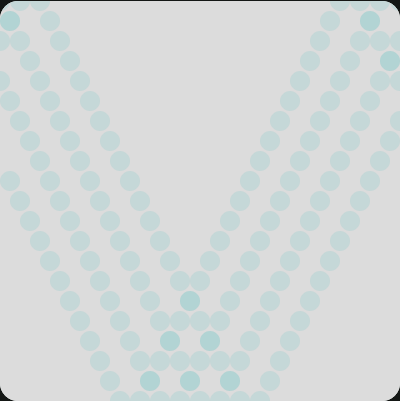
03 / Motion & PhysicsA ball, a playing field, and the joy of motion. A first step into the world of simulations.
Explore (opens in a new tab)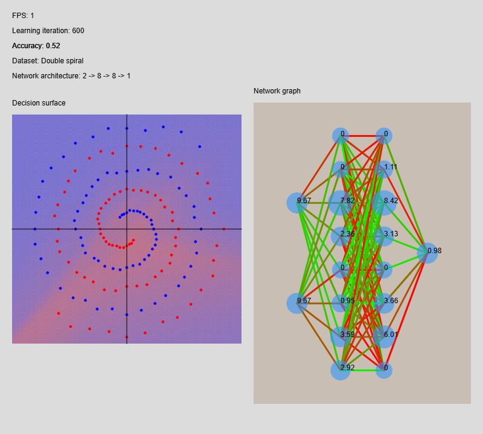
04 / Neural NetworksExplore three classification data sets while tuning a neural network and comparing its decision surface with the network graph.
Explore (opens in a new tab)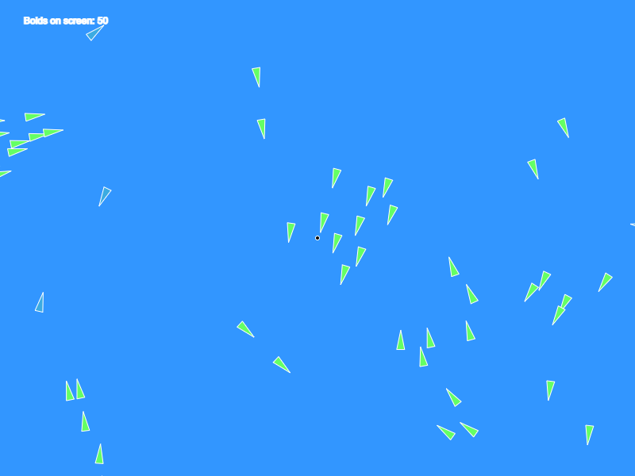
05 / FlockingExplore flocking with live steering controls. Move the follow point, add boids, and introduce rocks or chasers.
Explore (opens in a new tab)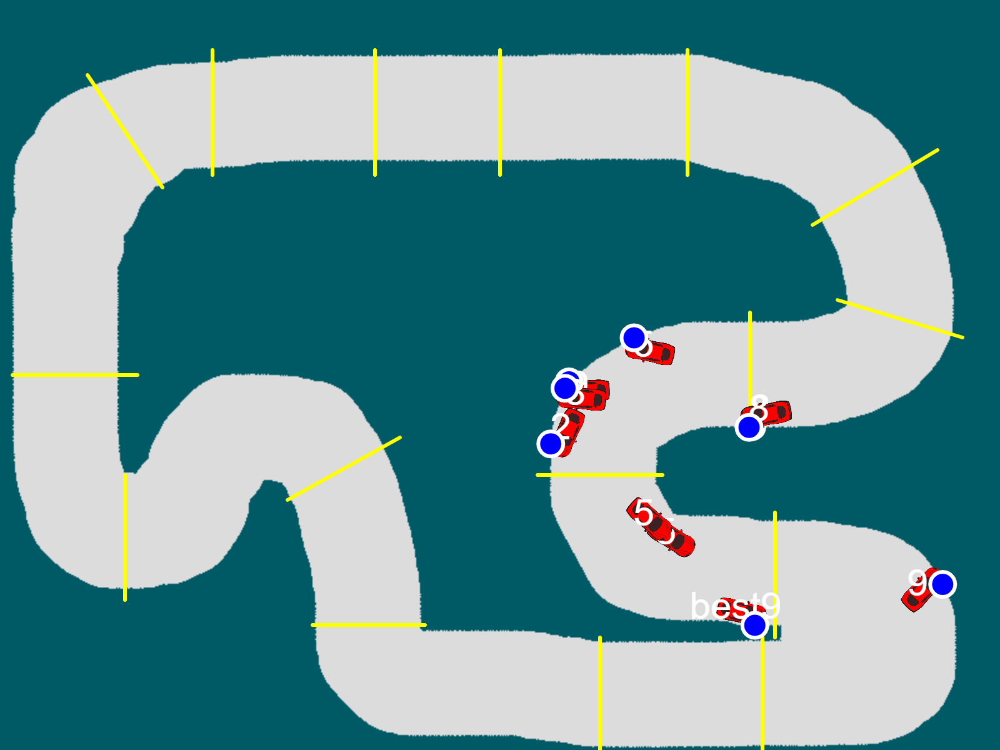
06 / NeuroevolutionWatch cars evolve through fitness-weighted selection and mutation on a PNG track. Tune learning settings or add manual driving inputs alongside the AI.
Explore (opens in a new tab)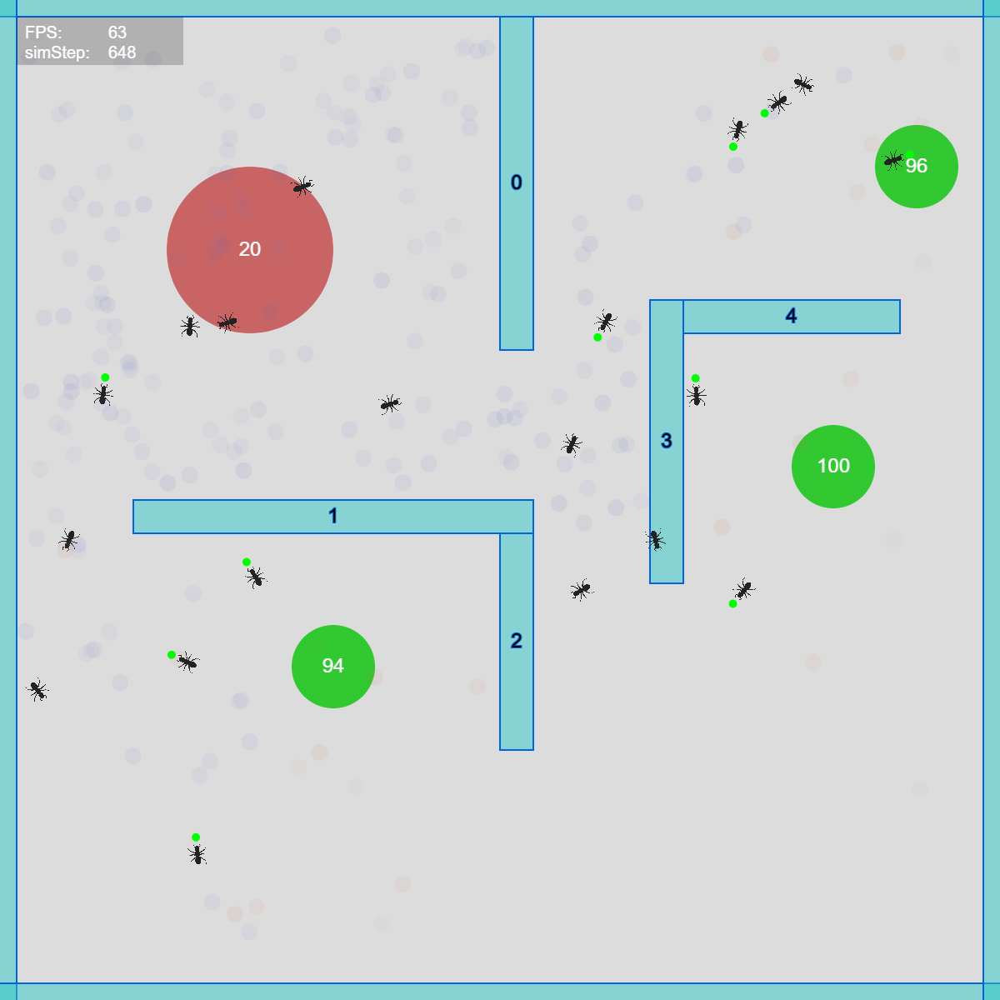
07 / Ant ForagingWatch ants explore, collect food, and leave distinct wander and return pheromones while navigating obstacles.
Explore (opens in a new tab)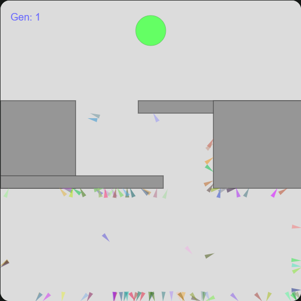
08 / NeuroevolutionWatch colored ships evolve movement genes as they navigate an obstacle course toward a green target.
Explore (opens in a new tab)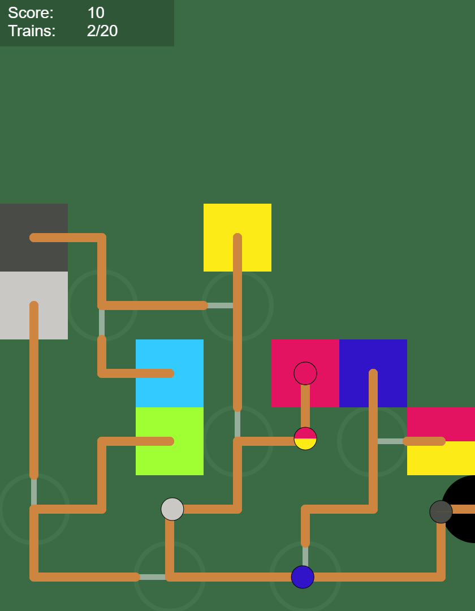
09 / Route PlanningSwitch junctions to guide moving trains to matching-color stations and score points before the 20-train round ends.
Play (opens in a new tab)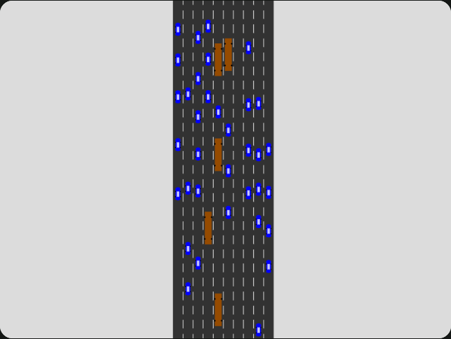
10 / Traffic SimulationWatch cars and trucks follow speed and safe-distance rules, with mouse controls for zoom, panning, and adding vehicles.
Explore (opens in a new tab)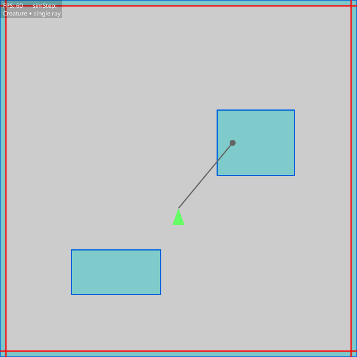
11 / Obstacle AvoidanceA prototype creature navigates a bounded board with rectangular obstacles, using one forward ray for obstacle avoidance.
Explore (opens in a new tab)The workshop keeps growing.There is always room for new ideas.
Explore the code on GitHub